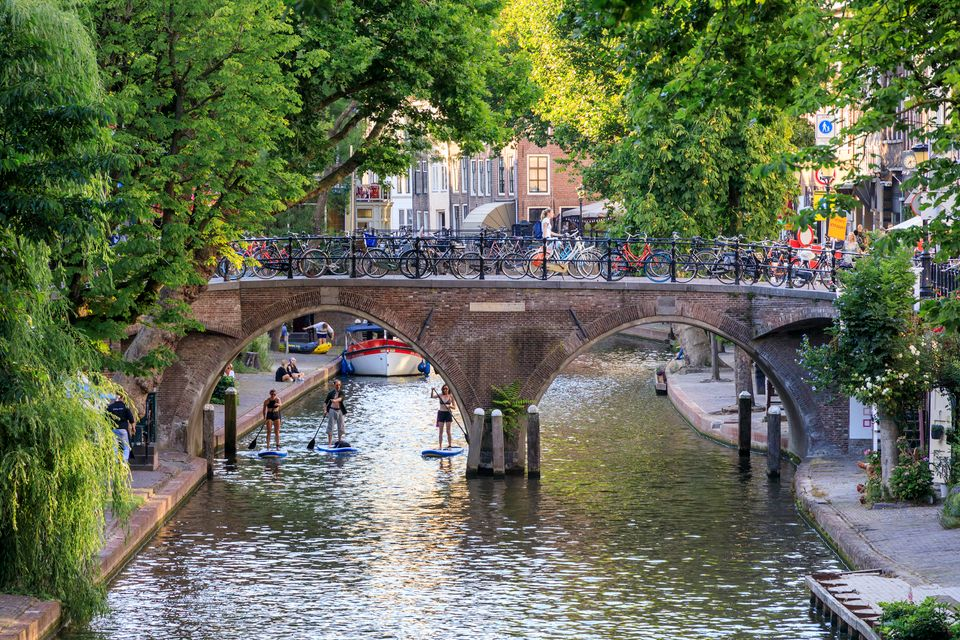

Flexplekken & Co-working Enkele favoriete locaties in de stad: Social Impact Factory Mindspace Utrecht Tribes Inspiring Workplaces
Waarom Utrecht? Met haar centrale ligging, gezellige sfeer en sterke ondernemersnetwerk is Utrecht de perfecte plek om te werken, ontmoeten en groeien. 